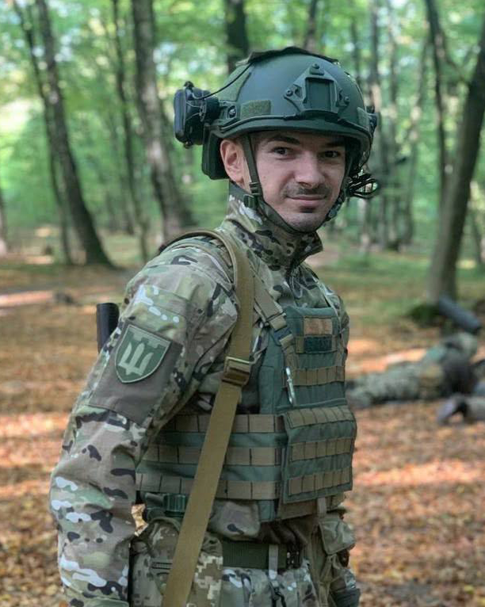

2014 року Остап закінчував наш коледж. Тоді росіяни окупували схід України. Сьогодні Остап — наш захисник, який боронить країну на тому ж сході і від тих же загарбників, що 2014 прийшли «асвобождать» Донбас. Він робить все, аби майбутні випускники нашого коледжу, вчилися під мирним небом.
Народився 8 лютого 1995 року. Все дитинство і юність провів у Винниках та Львові. Прості та безтурботні часи минали за звичними розвагами: наприклад, поїхати з друзями на велосипедах на риболовлю чи поласувати чужими вишнями просто з дерев. Проте найбільше у пам’яті закарбувалося те, як будували халабуди, адже подібними справами довелося займатися і в дорослому віці, але вже за зовсім інших обставин.
Базову середню освіту здобував у Львівській гімназії з промовистою назвою «Престиж».
«Щоранку добирався з Винників до школи. Квест був ще той, щоб влізти зранку в маршрутку», — про перепони на шляху до школи згадує Остап.
Улюбленим предметом у школі називає фізкультуру, мовляв, вчитися не дуже любив і не мав тієї зацікавленості, яка з’явилась вже згодом у Поліграфічному коледжі на дисциплінах, пов’язаних із поліграфією.
Паралельно з навчанням займався кікбоксингом та захоплювався бойовими мистецтвами загалом, де показував непогані результати, здобуваючи призові місця по Україні та представляючи СК «Золотий Лев». Але згодом спорт довелося покинути через стан здоров’я.
Після закінчення 9 класу Остап прийшов здобувати фах до Львівського поліграфічного коледжу, де насичене студентське життя залишило слід не лише у його спогадах, а й в особистому житті — тут він знайшов дружину та кума.
Навчався за спеціальністю «Комп’ютерна обробка текстової, графічної та образної інформації», кураторкою якої була Оксана Ігорівна Гривняк.
«Це була перша група, де я була куратором від першого курсу до випуску», — пригадує пані Оксана.
Загалом називає Остапа дуже відкритим та жвавим хлопчиною, проте в навчанні — не надто зацікавленим.
«Інтерес до навчання був більшим вже у коледжі, коли почались предмети пов’язані з поліграфією», —згадує Остап.
Оксана Ігорівна ж стверджує, що Остап справді почав краще вчитися на 3 та 4 курсах, але пояснює такий стрімкий прогрес у навчанні двома причинами: «Його успішність покращилася на старших курсах. Чи то через вивчення спец дисциплін чи через вплив Іри? Іра — заступниця старости, серйозна, відповідальна. А після однієї з поїздок в Карпати я помітила, що Іра з Остапом тримаються за ручки».
Так і почалася історія кохання, що триває вже понад 14 років. Остап пригадує, що й справді зустрічатися почали після однієї з поїздок у Карпати на другому курсі, попри те, що симпатія була ще від самого початку навчання.
Варто зауважити, що студенти групи були доволі організованими, і подібні поїздки, як-от походи в гори чи на річку, були постійними. Про ці мандрівки Оксана Ігорівна дізнавалася вже після того, як вони відбулися.
«Пригадую фразу Остапа: „Нє, то нє, випий води горнє”, коли студенти відкривали пачку цукерок і запропонували мені пригоститись, а я відмовилась. Ця фраза не видалась мені образливою, а, скоріше, щирою реакцією. Відтоді я також використовую цей вислів», — про Остапову дотепність згадує Оксана Ігорівна.
У такій щирій та дружній студентській ідилії минали роки навчання Остапа, проте ці моменти радості тривали лише до перших заворушень на Майдані.
«Планувалося урочисте вручення дипломів, я готувала промову з фотоспогадами… проте студенти отримували дипломи у відділі кадрів без урочистостей, бо на Майдані почалися розстріли», — спогадами про той час ділиться Оксана Ігорівна.
Навчання в коледжі закінчив наприкінці лютого буремного 2014 року. Згодом із багатьма своїми одногрупниками вступив до Української академії друкарства.
«В групі Остапа було багато хлопців, які із березня пішли на підготовчі курси в УАД. Однією із причин вступу став початок російсько-української війни та страх матерів. У 2022 році уже дорослі хлопці зробили свій свідомий вибір, ставши на захист України», — розповідає Оксана Ігорівна.
Одним із тих хлопців був і Остап. Своє життя з поліграфією у подальшому не пов’язав, але через роки обставини, за викликом часу, зробили вибір самі за себе — почалася повномасштабна війна.
«Розуміючи, що у мене росте син і мені потрібно показати гідний приклад — вирішив долучитись до ЗСУ. Точно знав, що хочу захищати свою сім’ю, тому вибір був очевидний».
На початку повномасштабного вторгнення Остап поєднував роботу зі службою в Добровольчому формуванні територіальної громади «Лев», де виходив на чергування та навчався потрібних у подальшому навичок. Починав службу зі 125-ї бригади територіальної оборони, що влітку 2025 року переформатувалася у 125 ОВМБр, а згодом долучився до 3-го армійського корпусу, створеного у березні 2025 року на базі 3-ї окремої штурмової бригади. Бригаду обирав самостійно. Пригадує, що на той момент мав певну кількість знайомих, з якими планував долучитися до неї.
Папай. Саме такий позивний дали Остапові побратими, бо побачили схожість із знаменитим персонажем коміксів та мультсеріалів — моряком Папаєм.
На запитання про те, що здивувало на службі, Остап відповідає: «Після того, як наша бригада перейшла в 3 АК, дуже вразив дух побратимства, досвідченість командування, взаємодія та взаємовиручка. І вцілому робота такої великої структури, як одного механізму».
Нині виконує бойові завдання на Лиманському напрямку.
Уже 12-й рік українці борються за свободу. Змінилися влада і час, і ті хлопці, що 2014 року випускалися з нашого коледжу зовсім юними, вже дорослі чоловіки. Проте єдине, що залишилося незмінним — війна. Ніколи не знаєш, коли вона застане тебе. Саме тому майбутнім поколінням радить пам’ятати, що мир — це не даність, а наслідок чиєїсь праці і втрат. А от тим, хто перейме суспільний обов’язок та продовжуватиме боротьбу, порадив займатися саморозвитком, навичками тактичної медицини та вогневої підготовки.
Однак технології й методи війни не стоять на місці, а постійно прогресують та змінюються. Тож вважає за потрібне вивчати нові технології, до прикладу FPV, НРК (наземних роботизованих комплексів), оскільки «теперішня війна — це війна технологій», — підкреслює Остап.
Зокрема, проходив службу та був знайомим з іншими нашими випускниками, чиї історії опубліковані на сайті, а саме Володимиром Сененьком та Дмитром Драпакою. Проте обоє, на жаль, поповнили наш розділ «Ті, кого пам’ятаємо».
Вдячні Остапові за службу та вірність державі у такий скрутний і переломний для країни час. Бажаємо сил продовжувати боротьбу та якнайшвидше повернутися додому із перемогою.
Підготувала Марія Примак, студентка спеціальності «Журналістика»